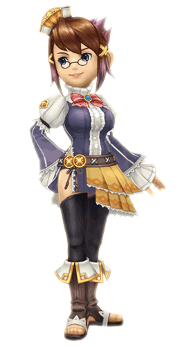

8 |
Personaggi |
 |
 ● Leo ● LeoRazza: Clavat Un giovane re che ha perso la madre in tenera età e il suo regno poco tempo dopo. È stato scelto dal cristallo e gli è stato dato l'incarico di ricostruire il suo reame in una nuova terra. Sarà aiutato in questo arduo compito dal potere dell'architek, un dono magico che gli consentirà di trasformare i ricordi in realtà. |
|
● Chime
Razza: mezza Clavat, mezza Selkie È al tempo stesso insegnante, consigliera e migliore amica di Leo. In quanto cancelliere del regno, Chime appare immediatamente al fianco del giovane re ogni qual volta Leo la evoca con la campanella magica. Si occupa di tutti i compiti amministrativi come la costruzione degli edifici, la supervisione del morale dei sudditi e... il mandare a nanna il giovane re! |
|
 ● Hugh Yurg ● Hugh YurgRazza: Lilty Un coraggioso eroe che ha preso parte a infinite battaglie: in passato ha condotto le carovane del cristallo nel regno di Leo. Serve con grande lealtà il giovane re ed è sempre pronto a dispensare utili consigli sull'arte della guerra e... su quella culinaria! |
|
 ● Pavlov ● PavlovRazza: sconosciuta Questa strana e irriverente creatura è apparsa all'improvviso all'arrivo del re e del suo seguito nel nuovo regno. È un grosso uccello, in grado di parlare ma non di volare, che sembra conoscere molto più di quanto non lasci intendere di questa terra... |
 |
 |
 |